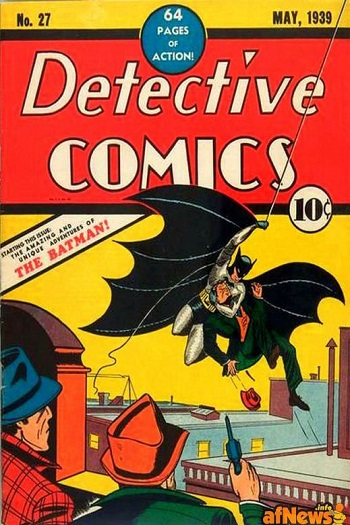
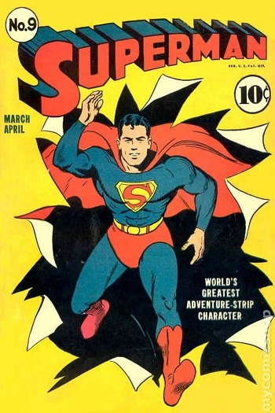
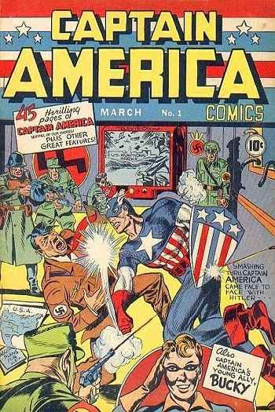

Golden Age
An event cited by many as marking the beginning of the Golden Age was the 1938 debut of Superman in Action Comics #1,published by Detective Comics (predecessor of DC Comics). Superman's popularity helped make comic books a major arm of publishing, which led rival companies to create superheroes of their own to emulate Superman's success.
Between 1939 and 1941 Detective Comics and its sister company, All-American Publications, introduced popular superheroes such as Batman and Robin, Wonder Woman, the Flash, Green Lantern, Doctor Fate, the Atom, Hawkman, Green Arrow and Aquaman. Timely Comics, the 1940s predecessor of Marvel Comics, had million-selling titles featuring the Human Torch, the Sub-Mariner, and Captain America. Although DC and Timely characters are well remembered today, circulation figures suggest that the best-selling superhero title of the era was Fawcett Comics' Captain Marvel with sales of about 1.4 million copies per issue. The comic was published biweekly at one point to capitalize on its popularity.
Patriotic heroes donning red, white, and blue were particularly popular during the time of the second World War following the Shield's debut in 1940. Many heroes of this time period battled the Axis powers, with covers such as Captain America Comics #1 (cover-dated March 1941) showing the title character punching Nazi leader Adolf Hitler.
As comic books grew in popularity, publishers began launching titles that expanded into a variety of genres. Dell Comics' non-superhero characters (particularly the licensed Walt Disney animated-character comics) outsold the superhero comics of the day. The publisher featured licensed movie and literary characters such as Mickey Mouse, Donald Duck, Roy Rogers and Tarzan. It was during this era that noted Donald Duck writer-artist Carl Barks rose to prominence.


